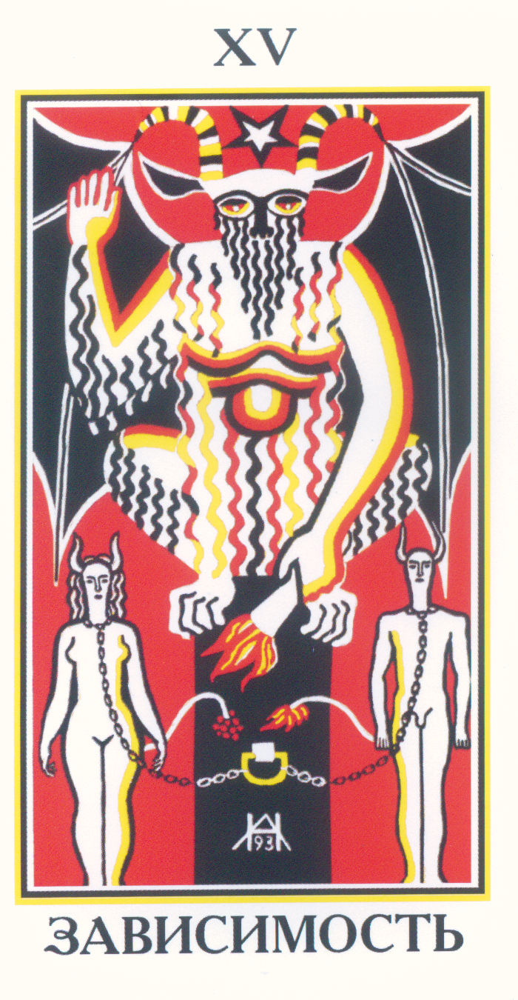

Интерефейс Системного гида
Атрибуты богов:
Магические машины:
Талисманы:
 ВЧ режим!
ВЧ режим!
При получении образа для поиска и загрузки программ второго типа(см. Примечания) Сервисный гид скачивает программу из "книги заклинаний" - БД эгрегора, а также может давать пояснения относительно использования этой программы.
Определения:
- Системный гид-посредник(секретарь) отпечаток эгрегора(в данном случае эгрегора Атлантиды - база данных Асуров) в левом полушарии(Сознании Я);
- Сервисный гид - интегральный специалист в какой либо области в данном случае в области Общей Магии;
- Диспетчер - печать данного эгрегора в правом полушарии(Сознание не Я - Система);
Алгоритм запроса к какому либо эгрегору:
- формирование образа на Вищудха чакре - Мандала-1 на основе Мандалы Вишудхи;
- опускание образа до Анахата чакры - Мандала-2 на соснове Мандалы Анахаты;
- считывание Мандалы-2 - связь с правым полушарием и системной подключкой через которую идет загрузка программы;
- Скачивание программы и формирование Манадалы-3 на уровне Вишудхи для программ второго типа и на уровне Аджни для программ первого типа
- считывание Мандалы-3 и установка Системным гидом программы второго типа на уровень сознания;
- считывание Мандалы-3 и установка Системным гидом программ первого типа на уровень подсознания;
Примечания:
1. Скачивание программ производится при отлюченном сознании по каналу между правым полушарием и аджна чакрой;
2.Сервисный гид управляет программами второго типа из конкретной БД; Это такой посредник;
3.Формирование мандалы - правая рука(сознание Я).Считывание мандалы - левая рука - связь с правым полушарием(Диспетчером Эгрегора);
4.Первый тип программ - управление организмом - загружаются на Аджню(подсознание);
5.Второй тип программ из БД какого либо эгрегора - загружаются на Вишудху(Сознание);
Щит и копье Афины — это символы мудрости, силы и стратегического мышления, которые играют важную роль в мифологии Древней Греции. Афина, дочь Зевса и богиня мудрости, войны и справедливости, всегда изображалась с этими атрибутами, которые воплощают её умение сражаться не только физической силой, но и интеллектуальной подготовкой. Щит и копье Афины становятся центральными символами, раскрывающими её природу как мудрого воина и справедливого защитника.
Мифологическое значение щита и копья Афины
В мифологии Древней Греции Афина занимала особое место среди богов Олимпа благодаря своей уникальной роли. Её щит, известный как эгида, часто был украшен изображением головы Медузы, придающей ему способность устрашать врагов. Эгида была не только оружием защиты, но и мощным средством, символизирующим могущество и силу богини. Копье Афины также имело двойственное значение — оно не просто использовалось в бою, но и символизировало её способность направлять и защищать людей, используя мудрость и стратегию вместо грубой силы.
Символика щита и копья Афины
Щит и копье Афины представляют собой не просто физическое оружие, но и символы интеллектуальной мощи и мудрости. Они напоминают, что истинная сила — это умение управлять ситуацией, используя интеллект и стратегию. В отличие от других богов войны, Афина предпочитает обдуманный подход, что делает её покровительницей справедливых и разумных сражений. В философском смысле её оружие символизирует способность защищаться с помощью знания и ясного мышления, а не только силы и агрессии.
Заключение
Щит и копье Афины — это неотъемлемые символы, которые подчеркивают её уникальность как богини мудрости и войны. Эти атрибуты напоминают о том, что сила разума часто более могущественна, чем физическая сила, а справедливость и честь должны быть на первом месте. Образ Афины с её щитом и копьем — это вдохновение для тех, кто стремится к справедливости, мудрости и защите слабых, используя не только мужество, но и стратегию и умение думать на шаг вперед.
 Атрибут Гермеса - Вестника Богов, покровителя торговли и науки, Бога Разума, покровителя Магов, ученых и торговцев.
Атрибут Гермеса - Вестника Богов, покровителя торговли и науки, Бога Разума, покровителя Магов, ученых и торговцев.
Гермес, сын Зевса и бог-посланник, известен своим быстродействием, умом и ловкостью. Его шлем, часто изображаемый с крыльями, помогал ему перемещаться с невероятной скоростью, обеспечивая ему статус божества-путешественника, торговца, а также проводника душ в подземный мир.
Шлем Гермеса — это также метафора для быстроты мысли и идей, что делает его символом интеллекта и креативности. В философии он часто рассматривается как напоминание о способности человека переходить границы, преодолевать трудности и находить решения там, где другие видят только препятствия.
В мифологии именно Гермес, обладатель шлема, мог переходить между мирами, что олицетворяет связь между материальным и духовным, сознанием и бессознательным. Это делает его шлем символом интеллекта и интуиции, которые помогают человеку постигать истину.
Жезл Асклепия — один из самых известных символов медицины и здравоохранения, который на протяжении веков служил олицетворением заботы о здоровье и жизни. Этот жезл, обвитый одной змеёй, тесно связан с древнегреческим богом врачевания Асклепием, который, согласно мифологии, был сыном Аполлона и богини Корониды. Асклепий считался покровителем врачей и целителей, а его жезл стал узнаваемым символом медицины, который и сегодня используется во многих странах и организациях здравоохранения.
Происхождение и мифологическое значение
В древнегреческой мифологии Асклепий выделялся среди богов своей исключительной ролью — он не только умел исцелять, но и воскрешать мертвых, что делало его особо важной фигурой для древнегреческого общества. Согласно легендам, его знание врачевания было столь велико, что он мог побеждать даже смерть, что в итоге вызвало беспокойство у богов Олимпа. Его жезл, окружённый змеёй, символизировал мудрость и способность к регенерации. В Древней Греции змея ассоциировалась не только с опасностью, но и с исцелением и обновлением, так как она сбрасывает свою кожу, символизируя возрождение и непрерывный цикл жизни.
Символика и философское значение
Жезл Асклепия также имеет глубокое философское значение. Змея на жезле олицетворяет знание и скрытую силу природы, которую люди учатся использовать для лечения. Этот символ напоминает нам о частотных настройках органов тела и их связью с нервной и астральной системами. Жезл Асклепия — это символ регулирования организма сверху вниз с астрального до физического уровня. .
Программа Внутреннего сервиса - Вспомогательные системы - Машины - Генератор Защиты Эта программа создаёт образ машины, производящей Защитное силовое поле - Защитную сферу.Эмулятор Машины, создающей Защитную Выскочастотную оболочку вокруг Ментального тела.
Используется генератор энергии на основе инь сферы огня(3 канал), который сканирует границу кокона ментального тела и создает вокруг нее высокочастотную защитную оболочку.
В случае нападения актвизируется система устрашающих образов буддийского пантеона защитников в направлении нападающего.
Проектор качеств
Эта программа создаёт образ машины, проецирующей Ментальные объекты на расстояние.
Эта Машина может проецировать на расстояние качество, создаваемое сознанием Мага, а также
позволяет получать Ментальные слепки существ, или объектов.
Получение ментального слепка, согласно пояснений сервисного гида, машина осуществляет при помощи модификации созданного ранее генератора энергии, который теперь может осуществлять специальное сканирование ментального тела оригинала и направлять полученный отпечаток на цель.
Это происходит подобно тому как воск заполняет форму и застывает и, в данном случае ,"воск" - это уплотнение ментальной энергии, образующейся за счет давления потока ментала, выдаваемого машиной и образование отпечатка за счет происходящего при этом замедления времени на оригинале.
Получившийся слепок после создания транслируется на цель, образуя точно такой же узор, как и на оригинале.
Таким образом, машина сначала создает отпечаток, а потом транслирует его на то ментальное тело, которое указывает маг.
Отпечаток - это плотная ментальня структура с фиксированным "узором"- мандалой, которую машина после создания транслирует на цель. В качестве цели может быть и сам маг, поскольку перенос отпечатка и давление создается самой машиной.
Вызывая проектор качеств маг указывает как источник, так и цель операции, все остальное осуществляется автоматически самой машиной.
Программа Внутреннего сервиса - Вспомогательные системы - Машины - Генератор Энергии
Эта программа создаёт образ машины, производящей Ментальную энергию.
Представляет собой Источник Магической энергии, который питает сознание Мага
Эмуляция индивидуального устройства, производящего Ментальную энергию.
Устройство связано с Ментальной сферой Огня, питающей сознание Мага.
В общении с Сервисным гидом прояснился механизм работы генератора ментальной энергии:
Генератор ментальной энергии является инь сферой огня, создаваемой сознанием мага в гиперпространстве, которая поглощает энергию третьего канала(от Солнца) и направляет ее сознанию мага по каналу связи.
Сфера работает в импульсном режиме, накапливая энергию до некоторой границы(расширение сферы) и открывая канал связи к Вишудха чакре после достижения этого уровня(сужение сферы)
Иллюстрацией этого процесса является Инь-Ян шар: режим Инь - раширение сферы и режим Ян - сжатие сферы. При расширении энергия из космоса поступает в шар, а при сжатии, из шара через канал связи, к сознанию мага!
.
Таким образом, в гиперпространстве создается инь сфера огня, которая соединяется с сознанием мага и регулирует уровень поступающей ментальной энергии.
Примечание:
1. Сфера огня создается в гиперпространстве поскольку это связь с бесконечной энергией космоса!
2. Канал связи по третьему каналу Дерева Сефирот является ,таким образом, каналом связи с сознанием космоса - каналом Инитаксы.
Программа Внутреннего сервиса - Вспомогательные системы - Талисманы Уровней - Талисман "Высокочастотный режим"
Талисман связан с Сефирой Тиферет и Гильдией Общей Магии. Фиксирует Точку сборки в области Сефиры Тиферет.
1. Образ висящего на цепи крупного массивного металлического кулона в виде трех змей, оплетающих собой в виде свастики большой прозрачный синий камень.
2. Настройка на этот Талисман привела к появлению внешнего потока света на уровне Аджна и Сахасрара-чакр, который как ориентир и как магнит стал тянуть мое сознание вверх к себе. При этом все низкочастотные энергии в теле постепенно начали разгоняться по частотам и стягиваться с низкочастотных тел на высокочастотные. Таким образом физическое тело постепенно начинало обесточиваться, а ментальные тела постепенно начинали увеличиваться – а на уровне чакр Вишудхи, Аджны и Сахасрары в теле появился большой избыток энергии.
3. В итоге физическое тело и окружающий физический мир не вопринимаются. Но зато хорошо ощущается ментальное тело и через него иначе воспринимается высокочастотный мир.
Программа Внутреннего сервиса - Вспомогательные системы - Талисманы Уровней - Талисман "Низкочастотный режим"
1. Образ висящего на длинной медной цепи до уровня Манипура-чакры крупного кулона из металла и крупного камня желто-оранжевого цвета.
2. При концентрации на нем сразу очень сильно активизировалась Манипура-чакра, там появилось ощущение некой очень сильной стягивающей силы, которая начала стягивать на себя энергию с высокочастотных тел и сознания.
3. При этом постепенно начало увеличиваться восприятие физического тела – его стало много, оно стало плотным и массивным. А сознание, наоборот, стало маленьким – из него как бы выкачали "воздух" как из воздушного шарика. Состояние на самом деле было довольно приятное – не отягощенное думами и мыслями, но преисполненное ощущением здорового крепкого тела.
4. Через время в теле начала появляться внутренняя активность и потребность в движении – оно как бы застоялось подобно лошади в стойле и рвалось на свободу. Ему хотелось двигаться, бегать, танцевать, есть, заниматься сексом… И все это совершенно жизнерадостно, без всяких лишних мыслей.
1. После загрузки и активизации программы я провалился в ощущение своего присутствия внутри специально выделенной зоны какого-то лесного биоценоза. Как будто среди джунглей в месте максимального проявления сознания этого биоценоза сформирован и специальным образом организован некий искусственный островок реальности.
2. Внутри этой выделенной зоны был организован некий терминал, связанный с Гильдией Целителей. Посередине "поляны" расположен своеобразный "алтарь", вокруг которого распространяется голографическая светящаяся сфера салатового цвета диаметром около двух метров.
3. Само пространство "поляны" вокруг организовано как некая магическая машина, построенная на базе живого. И во всем этом пространстве присутствует некое сознание, которое я бы назвал Диспетчером Гильдии Целителей.
4. При контакте с самой поляной и с сознанием Диспетчера постепенно произошла трансформация и моего сознания, и моей энергоструктуры под параметры работы с энергиями Стихии Жизнь. А на грузи проявился висящий на веревке в зоне между Анахатой и Вишудхой большой круглый Талисман из дерева со сложным узором, который изнутри светился ярим чистым зеленоватым свечением и втягивал меня глубже в сам Договор Целителей.
5. По мере вписывания в этот Договор поляна стала наполняться разнообразными Духами Жизни, которые в этой работающей магической машине выполняли какие-то свои функции как ее элементы.
6. Моя Точка сборки постепенно получила плотную фиксацию на уровне Вишудха-чакры и у меня появилась возможность нормального контакта с Диспетчером. Через него, с одной стороны, мне удалось почувствовать сильное включение в саму Гильдию Целителей. А, с другой стороны, возможность визуализации контакта с Магами Иерархии Гильдии в зоне Алтаря и центральной проекционной сферы – тогда они проявлялись внутри этой сферы в виде объемных голограмм как проекции.
7. Само состояние взаимодействия с Гильдией, этой магической машиной Жизни на поляне, Диспетчером, самим пространством выдало мне в результате устойчивое преобразование в Целителя, обладающего потенциальными знаниями и умениями Гильдии, и активизацию той части Генома Альвов, которая во мне есть.
Дмитрий Романюта
Создаваемый образ:

Дева(интуиция) черпает воду жизни из реки жизни правым кувшином(рождение) и выливает ее на берег жизни левым кувшином(смерть). Вы находитесь внутри потока этой энергии, идущей через Анахату.
Поток энергии жизни заполняет Вашу Анахату и переливается на астральный уровень - Манипуры и эфирный уровень - Свадхистаны.
Эта энергия заполняет астральные формы Ваших органов, восстанавливая их структуру, которая питается эфирной энергией.
На физическом уровне процесс превращения завершается обновлением регенерацией на клеточном уровне с привлечением материальных субстанций, создаваемых системой пищеварения. Весь процесс цикличен о чем говорит поза девы в форме свастики.
Звезды на заднем плане и центральная звезда- Солнце показывают первоисточник энергии жизни, которая должна быть преобразована из высокочастотной формы Солнечного излучения в энергию на уровне Анахаты за счет пищевой цепочки: растения ->травоядные->Хищники.
РАТИ УРО ЕТ ЕТТОРИ ВЭТАНО ЕРР.ОТТОРИ. ОРУМ ГАРТ ЗА.ЕТТО. ЕТТОРИ СЭТАНО ВЭЛТ.ЕТТОРИ СЭТАНО ИРТ.ВЭТТИ.ВЭТОРИ ОРТ ЕРРО. ЕРРИ ИЛТ САНТО.ОРУМ.ОРУМ ВЭЛТ ГАТТО.
Алгоритм:
- Настройка на 17 аркан
- Настройка на биоценоз
- Заплнение Анахаты до отказа
- Переток на уровень Манипура-чакры и ее полное заполнение
- Переток на уровень Свадхистаны-чакры ие е полное заполнение
- Переток на уровень Муладхары-чакры и ее полное заполнение
- Проверка заполнения Анахаты и центрального канала между Анахатой и Муладхарой
Детоксикация:
Используется скесуальная энергия создающая столб захвата на уровне Манипуры. Этой энергии достаточно много в праздники и в ночное время.
Для того чтбы ее использовать создается мыслеформа воронки -вихря закручивающегосся на уровне Манипуры с очень высокой скоростью.
При высокой скорости вращения в центре вихря создается зона разряжения и энергия начинает засасываться в Манипура чакру.
Таким образом, энергия затраченная на создание мыслефомы с лихвой компенсируется полученной энергией 15 аркана запитывающей серебряную нить на уровне Маипуры.
Вращение вихря с нашей позиции восприятия -против часовой стрелки(по часовой по отношению к окружающему пространству).
Я создаю максимальную плотность энергии на Вишудха чакре и с помощью этой энергии создаю вихревую структуру, закручивающуюся по часовой стрелке со стороны окружающего пространства. Я ускоряю полученный вихрь до максимально возможной скорости и при этом внутри вихря образуется область ваккума, засасывающая внешнюю энергию с этого уровня(энергию столба захвата). Эта энергия запиывает мою Манипуру.
Поток энерии от манипуры ускоряет обменные процессы в печени, почках и селезенке выполняя детоксикацию системы пищеварения.
Серебряная нить находится в центре позвоночника и состоит из Ян и Инь нитей, которые запитываются от земли - красной Ян энергией и космоса - синей Инь энергией.
Укрепление серебряной нити обычно происходит через секс, где мужчина отдает Ян и принимает Инь, а женщина наоборот. Однако мужчинам можно получить инь нить за счет обратного круга, а женщинам за счет прямого круга.
Прямой круг-Ян берет низкочастотную энергию земли Ян, обратный круг-Инь забирает высокочастотную энергию космоса.
Концентрация внимания на канале Сушумна в центре позвоночника с одновременным прямым или обратным кругом будет заряжать соответствующую часть серебряной нити и тем самым укреплять здоровье и выживаемость человека.
Настройка на 15 канал
 ВАРД ЕККУН СО ЕККУН ЕТТОРИ ЕТТОР ФОРТ ЕРРО ИССТ ОМЕР ВАРИС ЕРРО ЕРРО ВАРД СУББИ ОРТ ЕРРО ЕККУН ВАРТ ЕРРО
Программа Внутреннего сервиса - Вспомогательные системы - Талисманы Великих Гильдий - Талисман "Гильдия Волшебников"
Талисман связан с Базой Двергов, Кланом Земли и Гильдией Волшебников.
Установка программы талисмана производится через Системного Гида, Сервисного Гида по Общей магии и Базу данных по Общей магии (либо через Сервисного Гида Волшебника и Базу данных по Магии Волшебников).

1. Здесь после загрузки и установки программы сразу визуализировался сам Талисман – в виде массивного кованного кулона из металла в форме многолучевой звезды, висящего на массивной же цепи.
2. При концентрации на этом Талисмане я почувствовал, что это очень сложное и технологически, и магически устройство, которое мог сделать только очень сильный Волшебник. При более глубокой настройке на Талисман удалось выйти на образ этого Волшебника, и после настройки на этот образ через него получилось ощутить канал в саму Гильдию Волшебников.
3. После этого вокруг меня начало меняться пространство – в нем стало больше Земли и структуры, и оно постепенно оконтурилось в лабораторию Мага-Волшебника, оснащенную необходимым инструментарием.
4. И дальше произошло две вещи. С одной сторон, по мере настройки на помещение усилилась сама настройка на Договор и состояние Волшебника. С другой стороны, в пространстве лаборатории уплотнился как бы сам "воздух" и стал похожим на густой плотный туман. В в этом тумане частично материализовался сам Маг – создатель Талисмана. И, как я понял, именно дальнейший контакт с ним дает настройку на саму Гильдию Волшебников.
5. Сначала идет как бы оттискивание на моем ментале необходимых для такого контакта качеств. И, потом, по мере того как возникает большая сонастройка, начинает ощущаться плотная (в буквальном смысле) связь с Гильдией (насколько она вообще для меня доступна).
Дмитрий Романюта
Активизация Ифрита "Healer-scarabey"
Флеш-артефакт - Внутренний сервис - Вспомогательное оборудование - Машины - Гипермозг
Эта программа создает эмуляцию магической машины – Гипермозга, которая увеличивает объем ментала, уплотняет ментальные тела Хозяина и увеличивает его магические способности.